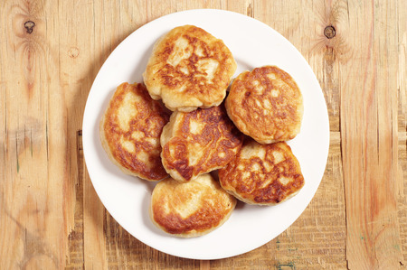
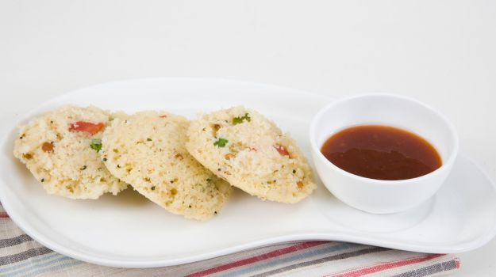

| Healthy Foods | Image | Description |
|---|---|---|
| Multigrain Pizza |  |
Replace the regular pizza base with a healthy multigrain base. Use a fresh pesto sauce instead of ketchup and use some healthy toppings. |
| Lentil-Mushroom Burgers |  |
Presenting, burgers in a healthy avatar. Make the patties with mushrooms and sneakily hide some lentils in them. Place them between whole wheat buns, serve and then watch them disappear. |
| Ragi Cookies | Draw a smile on their faces with a batch of ragi cookies. Ragi is packed with calcium which makes it great for kids in their growing phase. Ragi turns brown on roasting and can easily pass off as chocolate cookies. You can also try oatmeal and raisin cookies for variety. |
|
| Coconut Banana Fritters |  |
Marinated bananas with lemon and sea salt coated with bread crumbs and dessicated coconut and then baked to perfection. Honey over caramelized bananas? Yum! Kids won't be able to resist this one. |
| Eggless Atta Cake | Yogurt, cinnamon, nuts, whole wheat flour and jaggery - all together will make a healthy tea time cake. |
|
| Melon and Kiwi Fruit Smoothie | Blend Kiwi, melon, grapes, papaya, honey, milk and oats together to get a delicious and refreshing smoothie for summers. You can serve this fulfilling cold beverage between meals or as a quick healthy breakfast. Yogurt, cinnamon, nuts, whole wheat flour and jaggery - all together will make a healthy tea time cake. Surprise them with a treat every once in a while. |
|
| Whole Wheat Pasta in Mushroom Sauce | Nothing is better than home-made pasta with a creamy mushroom sauce. Choose whole wheat penne and throw in some veggies. |
|
| Oats Idli |  |
Made with roasted oats, mustard seeds, urad dal, channa dal, a pinch of turmeric powder and steamed, these idlis make for a great healthy lunch box meal. |
Fresh Corn Bhel |  |
Corn served under the cover of tangy chutney, lime juice and fresh coriander. This one serves as a great evening snack. |
Chicken Ball and Spinach Soup | Blend Kiwi, melon, grapes, papaya, honey, milk and oats together to get a delicious and refreshing smoothie for summers. You can serve this fulfilling cold beverage between meals or as a quick healthy breakfast. Yogurt, cinnamon, nuts, whole wheat flour and jaggery - all together will make a healthy tea time cake. Surprise them with a treat every once in a while. |